The politician who would come to represent the Progressive movement on the national stage was Theodore “Teddy” RooseveltThe youngest president in American history, Roosevelt was only forty-two when the assassination of William McKinley elevated him to office in September 1901. Roosevelt believed that the federal government should arbitrate conflicts between workers and industry. He also sought to limit the power of trusts, or at least make sure that these large companies operated in the public interest.. An asthmatic and sickly child born into affluence, Roosevelt developed his own brand of toughness as he labored to transform his mind and body, often against the warnings of his physicians. Wealth facilitated his metamorphosis, as Roosevelt went from home school to Harvard where he embraced “masculine” activities such as boxing. Affluence allowed him to cultivate a diverse range of talents. However, it was his force of personality and talent that empowered Roosevelt and drove him to try his hand at a variety of careers. Believing the men of his postfrontier generation were becoming “soft,” Roosevelt dedicated much of his life to searching for adventure—a way of living he called the “strenuous life.” Roosevelt succeeded at most of his activities, publishing a book on naval history, tracking down horse thieves in the Dakotas, leading a contingent of cavalrymen in the Spanish-American War, and serving in the state legislature of New York. And this was just the first four decades of the future President’s life.
Roosevelt’s family fortune also softened the consequences of his failures. Roosevelt bought and then abandoned a ranch in North Dakota after a blizzard wiped out his herds in 1886. While most men would face ruin after such a disaster, Roosevelt was able to return to his home in New York City where his wealth and connections led to a series of increasingly important political appointments, including commissioner of police. Later appointed to the newly formed US Civil Service Commission, Roosevelt gained a reputation as a reformer who rooted out political corruption. Roosevelt was appointed assistant secretary of the navy in 1897 but resigned his post the following year when the Spanish-American War broke out. Roosevelt saw the war as an opportunity for adventure and personally led a group of volunteers against an entrenched Spanish position. Regarded as a war hero following the successful assault on San Juan Hill, Roosevelt returned to New York and was elected governor on the Republican ticket in 1898. The leaders of the state’s powerful Republican political machine feared that Roosevelt’s popularity and reform agenda would loosen their grip on local politics. To remove Roosevelt, state politicians encouraged the incumbent President McKinley to select the war hero as his running mate in 1900.
Figure 4.1
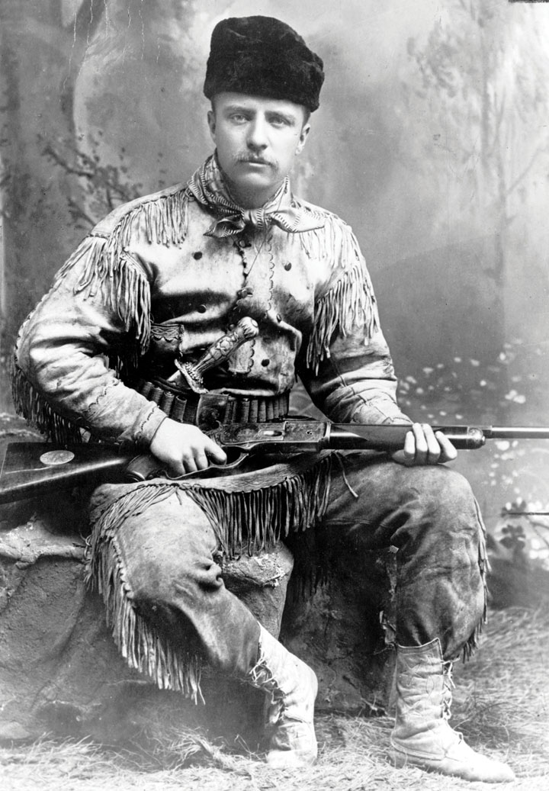This 1885 photo of Teddy Roosevelt demonstrates both his rugged grit as a rancher in the Dakotas and the wealth that permitted him to pursue a variety of careers. The ornate silver knife Roosevelt is carrying was made for his family by the New York jeweler Tiffany & Company. Despite his affluence and connections, Roosevelt earned the respect of his fellow ranchers in the Dakotas.
With the popular Roosevelt by his side, McKinley once again faced the Democratic candidate William Jennings Bryan in 1900. Bryan attempted to revive the issue of free silver in this campaign. However, the recent economic recovery greatly reduced the perceived relevance of Bryan’s economic ideas. Bryan also ran as an antiwar candidate, a position that appealed to many Americans who were beginning to view the war in the Philippines with suspicion. However, Bryan’s anti-imperialist message failed to overcome the belief that McKinley’s probusiness policies and overseas acquisitions were promoting the growth of US industry and commerce. With slogans such as “Four More Years of the Full Dinner Pail,” the McKinley-Roosevelt ticket prevailed in a close election.
McKinley died only six months into his second term after an assassin shot the president during the 1901 Pan-American exposition in Buffalo. Roosevelt was informed of his pending ascension to the White House while he was on a mountain-climbing expedition. He was soon sworn into office and served as president for the remainder of McKinley’s term. Roosevelt also won the election in his own right in 1904. During his seven-and-a-half years as president, Roosevelt’s personality and exploits dominated the news as much as his policies. For example, he invited professional boxers to spar with him in the White House—leading to an injury that left him blind in one eye. Roosevelt even rode one hundred miles on horseback in a single day—a feat many considered impossible. His love of the outdoors was legendary and helped to inspire a number of measures designed to preserve areas for sportsmen and the expansion of the national park system.
While in office, Roosevelt rejected the idea that the president should defer to Congress. “It is the duty of the president to act upon the theory that his is the steward of the people,” Roosevelt remarked, adding that he believed the president “has the legal right to do whatever the needs of the people demand, unless the Constitution or the laws explicitly forbid him to do it.” As president, Roosevelt introduced many of the reform measures sought by the Progressives, and in so doing, created a larger and more active federal government.
During his successful reelection campaign in 1904, Roosevelt promised that he would not seek a second term in 1908. He kept that promise and retired temporarily from public life, only to seek the nomination of the Republican Party in 1912. When the Republicans chose the incumbent William Howard Taft as their candidate, Roosevelt decided to run as the candidate of the Progressive Party. Although many states at this time had various independent third parties that used the term Progressive in their name, Roosevelt’s decision to run under a national Progressive Party banner in 1912 helped to forge a measure of unity among these various local parties. Like the Populists, however, the Progressive Party would prove short lived, but many of their ideas were incorporated into the platforms and policies of the Republicans and Democrats.
By the early 1900s, the largest 1 percent of corporations produced nearly half of the nation’s manufactured goods. Roosevelt and the Progressives believed that industry and finance were ruled by an oligopolya situation when a particular industry is dominated by a small number of powerful firms. In contrast, a monopoly exists when only one firm controls an industry.—a system where a small number of individuals exercise almost complete control. In defense of their perspective, nearly all of the nation’s railroads were managed by one of six firms. Half of these companies were controlled by the investment bank led by J. P. Morgan. Standard Oil controlled nearly 90 percent of the nation’s domestic oil refineries. Trusts controlled most other major industries, while a series of mergers and acquisitions meant that retailers were increasingly affiliated with national chains. Many Americans were concerned by the consolidation of power by these corporations. At the same time, they recognized that most of these corporations had succeeded by engineering more efficient methods than the patchwork of local firms they had replaced. Still, the Progressives believed that too much consolidation in any industry discouraged innovation and invited unfair practices.
Progressive reformers were generally middle-class women and men who had prospered during the second Industrial Revolution. As a result, they sought to reform capitalism rather than incite revolution. Progressive efforts at economic reform were directed at promoting efficiency and stability. The Progressives were deeply concerned by the kinds of class conflict that were erupting in other industrial nations during this time and hoped that governmental regulation of industry and labor might prevent the growth of radical doctrines such as SocialismBecause Socialism can refer to a philosophy, a political movement, and an economic and a political system, there are numerous variants of the definition of Socialism. In general, Socialism is a system where productive property such as farms and factories are collectively held and administrated. in the United States. At the same time, the Progressives believed that failure to regulate industry would result in a system that favored productivity over sustainability and economy over wages and workplace safety. If wages for workers were too low, the Progressives pointed out, workers would be much more likely to launch strikes and adhere to radical doctrines. As a result, the Progressives had a different perspective than unions. They favored many of the same policies, but did so out of concern for sustained economic growth and stability. For the Progressives, the growing popularity of Socialism overseas and in the United States was a symptom of the government’s laissez-faire policies. If government would intervene to prevent the growth of monopolies and mediate labor conflicts, the Progressives argued, the Capitalist system would provide both efficiency and fairness.
Figure 4.2
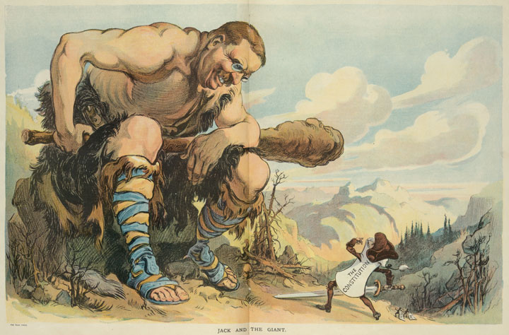Although he was a popular president, many satirized Roosevelt’s domineering tendencies. This cartoon depicts Roosevelt as a giant carrying a “big stick,” which he was fond of referring to, and peering down at a diminutive figure labeled “the Constitution.”
Socialists did not believe that the reforms the Progressives favored would be enough. They argued that Capitalism inherently led to exploitation of workers. The only solution, Socialists believed, was for government to seize control of the means of production (factories, mines, farmland, etc.) and run each of these enterprises in the public interest. From the perspective of middle-class Progressives, Socialism was the antithesis of freedom because it eliminated private property. Progressives believed the role of government was to protect private property and nurture the profit motive that inspired hard work and innovation. However, many workers lacked basic necessities and felt they had little chance to acquire any material security under the present system. For those who believed they were being exploited, and for those who contrasted their poverty with the wealth of the leading capitalists, the idea of equally dividing the nation’s wealth and permitting the government to run factories and farms held some appeal.
Progressives recognized the limitations of free market, even if they did not fully appreciate these shortcomings from the perspective of the poor. By enlarging the power and scope of government, the Progressives believed that they could regulate corporate America in a way that would ensure fair competition between businesses and fair conditions for workers. However, some Americans believed that the kinds of government intervention the Progressives sought might inadvertently become the first steps towards Socialism. By creating a powerful central government that had the power to regulate the private sector, they argued, the Progressives might unwittingly be creating a government that might eventually grant itself the power to seize control of businesses and other forms of private property. If the federal government ever became this powerful, opponents of Progressivism feared, political leaders might eventually rise to power by advocating class warfare and the seizure and redistribution of the nation’s wealth.
A small number of business leaders viewed Progressive reform as a compromise between Socialism and pure Capitalism. They believed some government regulation was necessary to make the free market operate correctly. They also believed the possibility of government intervention might help mitigate the demands of workers and prevent the popular uprisings that occasionally swept Europe. These business leaders pointed out that the kinds of changes the Progressives supported were usually mild reforms that reflected the shared interests between workers, management, and the public.
The government’s actions in negotiating a settlement between 100,000 striking coal miners and management during the 1902 Anthracite Coal StrikeA strike that began in the coal mines of eastern Pennsylvania that was resolved by federal arbitration. The miners received a modest pay increase but failed in their efforts to bar nonunion labor from the mines. provides an example of this kind of compromise and reform. Miners throughout Pennsylvania demanded a 20 percent raise and provisions forbidding nonunion workers from being employed within the mines. Management refused to consider these demands and argued that permitting a union-only workforce would effectively grant workers control over whom they could hire. As both sides prepared for a long strike, the rest of the nation faced the prospect of a winter without coal. Roosevelt and other Progressive leaders proposed that both sides agree to arbitration by experts in the field of coal mining. The coal unions agreed to this arbitration. Eventually, the government compelled the coal operators to agree as well. Workers’ demands that only union workers could be employed in the mines were rejected, but they did receive a 10 percent raise and reforms designed to increase safety and welfare on the job.
Although he was able to promote a compromise, some aspects of Roosevelt’s response to the coal strike angered conservatives and business owners. For example, the president threatened to use the military to seize and administer the mines if a solution could not be reached. Roosevelt’s intervention demonstrated a new philosophy of federal activism in response to a strike that threatened the public welfare. Rather than sending the military to break up the strike, the military would be used to operate the mines while the government acted as mediator. If mediation failed, both labor and management would suffer. From the perspective of conservative opponents of Progressivism, Roosevelt’s threatened seizure of privately owned mines indicated that the government had grown too powerful. The unions countered that the only reason such methods were even contemplated was because management refused to consider the reasonable requests of workers. From the perspective of the Progressives, the 1902 strike demonstrated that a few coal operators had become too powerful and government regulation was necessary to prevent future conflicts from ever reaching the point of a nationwide strike.
Figure 4.3
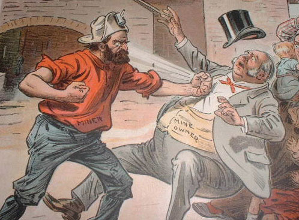The 1902 Anthracite Coal Strike in Pennsylvania resulted in a ten percent raise and other demands. The victory would prove short-lived as coal companies simply changed the rates they charged miners who were dependent upon supplies and housing controlled by the company.
Given the political upheaval in other developing nations and the past history of violent strikes in the United States, some business leaders were willing to accept a more active government at the turn of the century. Some believed the government might promote stability and better relations between labor and management. Corporate growth had not been curtailed by previous government regulations such as the Interstate Commerce Act, Sherman Anti-Trust Act, and various state regulations regarding workplace safety. In fact, some business leaders even argued that the existence of government agencies with limited powers over trade and commerce did more to provide the appearance of government regulation than actual reform. The creation of antitrust laws and small regulatory agencies had appeased reformers during the late nineteenth century, they argued, and might help to absorb public criticism and demands for more substantive reforms.
The Progressives of the twentieth century were not content with the mere appearance of reform, however. They became more insistent on breaking up trusts and creating powerful regulatory agencies as the decade progressed. Roosevelt personified this tendency. He began his administration by agreeing to continue the conservative policies of the late William McKinley. Before long, Roosevelt demonstrated his penchant for greater regulation of corporate America. For example, he ordered the Department of Justice to investigate the Northern Securities Company in 1902. Roosevelt believed that the only purpose of this railroad trust was to create a cartel. Northern Securities was a holding company that controlled three of the largest railroads in the country. The purpose of the company, Roosevelt argued, was to conspire against competitors while not competing against one another. Existing laws and the sentiments of their own shareholders prevented these three companies from simply merging into one giant railroad. Through the creation of Northern Securities Company, however, a single board effectively coordinated operations in ways that reduced competition between the three railroads while strangling many of their smaller competitors. After two years in court, the Supreme Court agreed with Roosevelt and ordered a breakup of the giant trust.
Figure 4.4
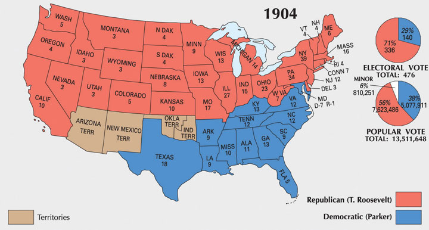Alton Parker swept the South, which was dominated by the Democratic Party by 1904. Roosevelt’s Square Deal and moderate Progressive reforms were supported by the rest of the nation.
During the 1904 election, Roosevelt promised a “Square Deal” that would protect US workers and farmers from monopolies and unscrupulous businesses. The Democratic candidate Alton B. Parker supported many of Roosevelt’s views, especially when it came to the danger of monopolies. However, Parker was far more conservative and opposed the president’s goal of expanding the power of the federal government. Parker believed that the states, rather than the federal government, could best act to protect workers and consumers. As a result, it was difficult for Parker to provide positive examples of what he might do if elected to lead a federal government he believed should defer to the states. Parker and his supporters feared that the expansion of federal power was contrary to the interests of the nation and its traditions of limited government. While many agreed with this message, Roosevelt’s growing enthusiasm for Progressive reforms allowed him to give positive examples of how he might use the government to address issues of concern to voters.
With the exception of Roosevelt’s enthusiasm for overseas expansion—a mainstay of the Republican Party during this era—observers noticed that Roosevelt backed many of the goals that had been associated with the Democrats in recent presidential campaigns. During the 1890s, the Democrats fused with Populists and considered themselves to be the party who defended workers and farmers against the interests of big business. Meanwhile, the Republicans supported more conservative and probusiness policies. Parker’s conservatism and support for the gold standard set him at odds with many in the Democratic Party. In some ways, Roosevelt better fit the ideas of Progressive Western Democrats and former Populists, while Parker embodied many of the ideas of the late William McKinley and conservative Republicans. As a result, it was difficult for Parker to win support among Western and Northern Democrats, and he failed to win even one state beyond the Mason-Dixon Line. Parker swept the Democratic South for two reasons. First, he defended the concept of local control over the federal government. Second, the Republican Party had largely ceased to exist in many Southern communities. In the North and the West, however, voters overwhelmingly supported Roosevelt’s Square Deal and its promise of more rigorous federal regulation.
After winning the presidency on his own in 1904, Roosevelt began to view his office as a “bully pulpit” from which he could enforce his reform agenda. The Roosevelt administration brought lawsuits against several leading trusts, including Standard Oil, the Du Pont Corporation, and the American Tobacco Company. Roosevelt was soon labeled a “trust buster” by some businessmen who opposed him. Ironically, the mood of the country had changed, and this derogatory label backfired by increasing Roosevelt’s popularity among liberal Republicans and Progressives. However, Roosevelt was careful to maintain positive relations with many business leaders, and he continued to receive campaign donations from the usual Republican supporters. Roosevelt also made it clear that he opposed the breaking up of certain “good trusts,” even as he avoided precise definition of which trusts were operating in the public interest. During his two terms in office, Roosevelt initiated only twenty-five lawsuits against corporations he believed had violated the law. Roosevelt preferred working with business leaders and convincing them to agree to certain regulations through the Department of Commerce and Labor, which was created in 1903. The majority of corporations agreed to the relatively mild demands of the commerce department and its growing staff of corporate and legal experts. In this way, Roosevelt’s White House personified the Progressive faith in the ability of experts within government to resolve problems by meeting with labor and business leaders rather than resorting to the courts or strikes to settle differences.
The federal bureaucracy expanded under Roosevelt and the reform-minded culture of the Progressive Era. Roosevelt secured the passage of the Elkins Act, which forbade railroads from offering rebates to its preferred customers. The Roosevelt administration argued that these rebates were a way of charging different prices to different customers without explicitly violating the Interstate Commerce Act. In 1906, Roosevelt and Congress passed the Hepburn ActA 1906 law that granted the Interstate Commerce Commission (ICC) the authority to establish maximum rates that railroads could charge.. This new law expanded the authority of the Interstate Commerce Commission (ICC) which had been created in 1887 to regulate railroads. In the past, the ICC could only investigate complaints of excessive rates and file lawsuits against railroads they believed were in violation of the spirit of fair competition. Under the Hepburn Act, the ICC could actually establish maximum rates that railroads could charge. If a particular railroad believed the ICC’s rates were set too low, it was now their responsibility to file suit and prove their case. As a result, the burden of proof and the hassle of initiating lawsuits now belonged to the railroads rather than the consumer and the ICC. Progressives cheered the Hepburn Act as model legislation providing the kind of vigorous government intervention they hoped would expand to other industries. Conservatives believed the new law concentrated too much power into the hands of federal bureaucrats. Business leaders feared that the new law might lead toward a much larger role for government as a regulator of private industry beyond the railroads.
Figure 4.5
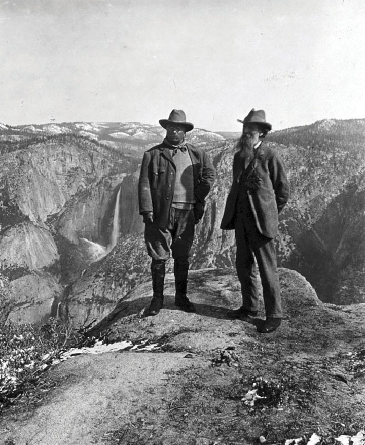President Theodore Roosevelt with conservationist John Muir overlooking California’s Yosemite Valley in 1903.
The Hepburn Act signaled an end of laissez-faire policies regarding some of the biggest and most powerful companies in the United States, even if the ICC used its new powers cautiously. ICC officials consulted with the rail companies before establishing maximum rates and other regulations to ensure fairness and continued operation of the nation’s infrastructure. Roosevelt also consulted with business leaders in ranching, agriculture, mining, and forestry before drafting laws regarding land use and environmental conservation. Individual states had taken the lead in establishing nature reserves and state parks. Due to the efforts of Sierra Club founder John MuirThe leading conservationist of the early twentieth century, John Muir founded the Sierra Club and documented the importance of preserving California’s Sierra Nevada Mountains. and other conservationists, Congress had also established a number of national parks. Roosevelt was inspired by the efforts of Muir, who hoped to preserve the wilderness for its own sake, even if the President tended to see the purpose of conservation in utilitarian terms.
In many ways, Roosevelt’s conservationism was similar to the perspective of Gifford PinchotLed the US Forestry Service and promoted the notion that government should ensure the sustainability of natural resources. Pinchot also increased the number of protected forests and required lumber companies to plant trees while outlawing the destructive practice of clear-cutting entire forests., chief of the US Forest Service. Pinchot’s goal was to promote the scientific management of government lands to ensure the long-term availability of lumber and other natural resources. Pinchot harnessed the power of the federal government to halt the destruction of forests and required lumber companies to plant trees and follow other regulations. His agency promoted the natural reforestation of areas where trees were harvested and also banned the controversial practice of clear-cutting entire forests. Together, Roosevelt and Pinchot quadrupled the nation’s total forest reserves to enclose 200 acres.
Roosevelt was a sportsman, and this perspective influenced his policies regarding conservation. He viewed the purpose of conservation largely in terms of preserving lands and species for recreation. In order to prevent overhunting, Roosevelt supported the creation of state agencies that regulated hunting through laws and game wardens. Many of these regulations disrupted the traditional ways of Native Americans and other rural dwellers who depended on hunting for food. At the same time, Roosevelt’s creation of fifty wildlife refuges and numerous national parks helped to preserve the wilderness and various species for future generations. Roosevelt also helped to mobilize public support for conservation, leading to the creation of the National Park Service during the Wilson Administration in 1916.
Muir collaborated with Roosevelt and Pinchot, recognizing the delicate status of the Conservationist Movement and his need to work with the federal government to promote his ideas. However, Muir could not abide by Pinchot’s decision to support the construction of a reservoir within Yosemite National Park. The purpose of the Hetch Hetchy Reservoir was to provide water to the city of San Francisco. Opponents countered that the reservoir would be disastrous for the ecology of Central California. Roosevelt demonstrated the limits of his belief in conservation, supporting the reservoir as a question of the needs of humanity versus romantic sentiment about the preservation of a picturesque valley. The Sierra Club and its founder John Muir launched a strenuous campaign in opposition to the reservoir project. They could only delay its passage, and construction was finished in 1923. The controversy split the conservation movement between those who sided with Muir about the need to preserve nature for its own sake and those who agreed with Pinchot about the needs to make nature serve the needs of man.
The American people have evidently made up their minds that our natural resources must be conserved. That is good, but it settles only half the question. For whose benefit shall they be conserved—for the benefit of the many, or for the use and profit of the few?
—Gifford Pinchot, conservationist and first Chief of the US Forest Service
Similar to the ways that aridity had defined the patterns of Western settlement and life following the Civil War, questions regarding water usage defined Western history during the early twentieth century. Nevada senator Francis Newlands introduced the Water Reclamation Act of 1902, a law which was often referred to as the Newlands Reclamation ActOfficially called the Water Reclamation Act of 1902, the Newlands Act established the federal Reclamation Service. This agency sponsored projects such as dams and irrigation systems that distributed water to arid regions of the West.. This law created the Reclamation Service, a federal agency charged with finding ways to spur agricultural and commercial development by distributing water to arid regions of the West. The Newlands Act set aside funds from the sale of federal land for large-scale irrigation projects. For example, the Shoshone Project brought water to the Bighorn Basin of Wyoming, while Arizona’s Theodore Roosevelt Dam near Phoenix permitted urban sprawl in the midst of a desert. Original regulations limited the sale of water from the federal government’s dams and irrigation networks to cities and individual family farms that were no larger than 160 acres. However, these regulations were increasingly modified or ignored as commercial farming and industry began to dominate the West.
Figure 4.6
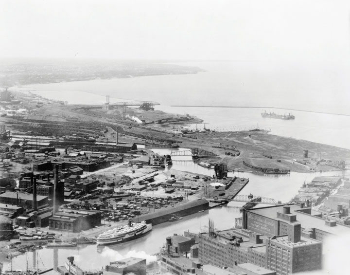This 1920 photo shows the commercial development along the Cuyahoga River in Cleveland. This river would later become synonymous with environmental pollution, but the practice of dumping industrial waste into rivers was common throughout the nation at this time.
The federal government largely neglected the most troubling environmental issue of the West—the long-term challenge of sustaining cities and commercial farms within the arid plains. Likewise, the environmental impact of commercial farming, industrial growth, and mining was not addressed. Coal companies were still permitted to abandon mines, even those that left open pits. Mine operators were also permitted to use hydraulic mining techniques that used millions of gallons to blast earth away from ore. The environmental consequences of these mining techniques were rarely considered in an era where cities and factories used rivers as their own dumping ground for sewage and industrial waste. Throughout the nation, most cities simply ignored the inconvenient truth that those who lived downstream depended on the same river for their drinking water. The Cuyahoga River between Cleveland and Akron became forever associated with environmental disaster when it became so polluted that it caught on fire in 1969. However, conflagrations on the surface of this and other American rivers were actually quite common during the early 1900s. During these years, cities emptied their sewage directly into rivers. Refineries dumped oil and industrial waste with little thought of the long-term consequences. Although the Progressives sought to preserve the pristine environment of the vanishing wilderness, few gave much thought to the modern environmental concerns of air and water pollution.
In a moment of jubilance he would later regret, Roosevelt promised that he would not run for reelection on the evening of his 1904 victory. Despite his desire to seek a second full term, Roosevelt remained true to his word and supported Secretary of War William Howard TaftAn influential judge in Ohio, Taft rose to national prominence after Teddy Roosevelt supported his nomination for president in 1908. Taft served one term and later became the Chief Justice of the Supreme Court. as the Republican nominee in 1908. Roosevelt’s support helped Taft secure the Republican nomination over Wisconsin senator Robert La FolletteA Republican politician from Wisconsin who was deeply influenced by the Progressive Movement of the early 1900s, La Follette enacted a number of reforms as governor of Wisconsin; these laws were aimed at increasing the power of government to regulate corporations.. Ironically, La Follette had been one of the strongest advocates of Progressivism and was the Republican leader who had initiated many of the Progressive reforms credited to Roosevelt. As governor of Wisconsin, La Follette instituted direct primaries for all major political offices. He also supported a method called “recall” where citizens could remove public officials. La Follette and other Progressives also supported methods of direct democracy, such as initiative and referendum, where citizens could introduce laws through petitions and special elections.
Progressives within the Republican Party favored La Follette over Taft. However, La Follette was labeled by some conservative Republicans as a radical who supported Socialism. Although he worked with the leaders of the growing Socialist Party in Wisconsin, La Follette strenuously and vocally opposed Socialism. He believed the key to preventing the kind of worker’s rebellion the Socialists were trying to foment was to reform the Capitalist system to be more responsive to the public interest and human rights. This idea was soon known as “the Wisconsin idea,” due to La Follette’s efforts in his home state. La Follette passed stricter regulations regarding worker safety and child labor. La Follette also favored stronger state welfare programs for women and children, as well as government-mandated pensions for workers. Although he would receive nearly 5 million votes as an independent candidate in 1924, many conservatives within the Republican Party viewed La Follette with suspicion and chose to support Taft in 1908.
Figure 4.7
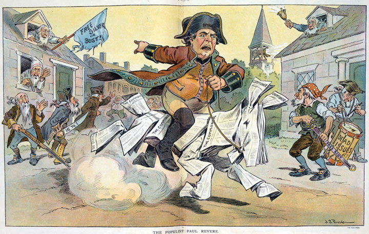A political cartoon lampooning Bryan’s attempts to revive support for ideas such as free silver. Among Bryan’s supporters is an aged man beating a drum labeled “dead issues.” Following his third defeat in 1908, Bryan moved away from the national spotlight. He would make one final major public appearance during the 1920s debate regarding public education, religion, and the theory of evolution.
For the third and final time in 1908, the Democrats selected William Jennings Bryan as their candidate. Once again, the political atmosphere of the early 1900s gave Bryan little room to maneuver and differentiate himself as the defender of the common man. Taft benefitted from his association with Roosevelt, who was hailed as a reformer. Equally important, the Republicans retained the support of corporations as well as many laborers and farmers. Many voters found it difficult to differentiate between the platforms of Bryan and Taft. The Democratic candidate espoused many of the same policies and ideas of the past seven-and-a-half years under Roosevelt—policies the voters believed Taft would continue.
Taft had widespread experience as a public figure through a series of political appointments and diplomatic posts. However, he had never run for political office before his nomination for president in 1908. It mattered little, as Taft’s advisors framed the terms of the campaign in ways that likened their candidate to the popular Teddy Roosevelt. Fairly or not, Bryan was portrayed as a perennial second-place candidate, while Taft was presented as the next Roosevelt. For some, Bryan’s recent conversion to Progressivism seemed opportunistic. In reality, Bryan may have been more committed to Progressive reform than nearly every Republican except Robert La Follette and a few other Republicans of Yankee conviction who simply could not bear the thought of being a Democrat. Bryan craved the opportunity to enforce antitrust legislation nearly as much as he longed to be president. His campaign called for tougher regulation of Wall Street and federal insurance for bank deposits—two reforms that might have addressed some of the problems that led to the Great Depression. In the end, neither of these reforms occurred, at least not until after the financial panic of 1929.
Taft’s victory did not lead to an end to Progressivism. The new president surprised many Republican Party insiders by pursuing antitrust legislation even more vigorously than Roosevelt. Taft made few distinctions regarding the “good” trusts his predecessor had tolerated and trusts that acted in restraint of trade. For example, Roosevelt had defended trusts operated by businessmen like J. P. Morgan, citing several times when the investment banker purchased securities during stock market panics that helped calm other investors. Taft disagreed, taking on companies controlled by the House of Morgan and other “good trusts.”
Figure 4.8
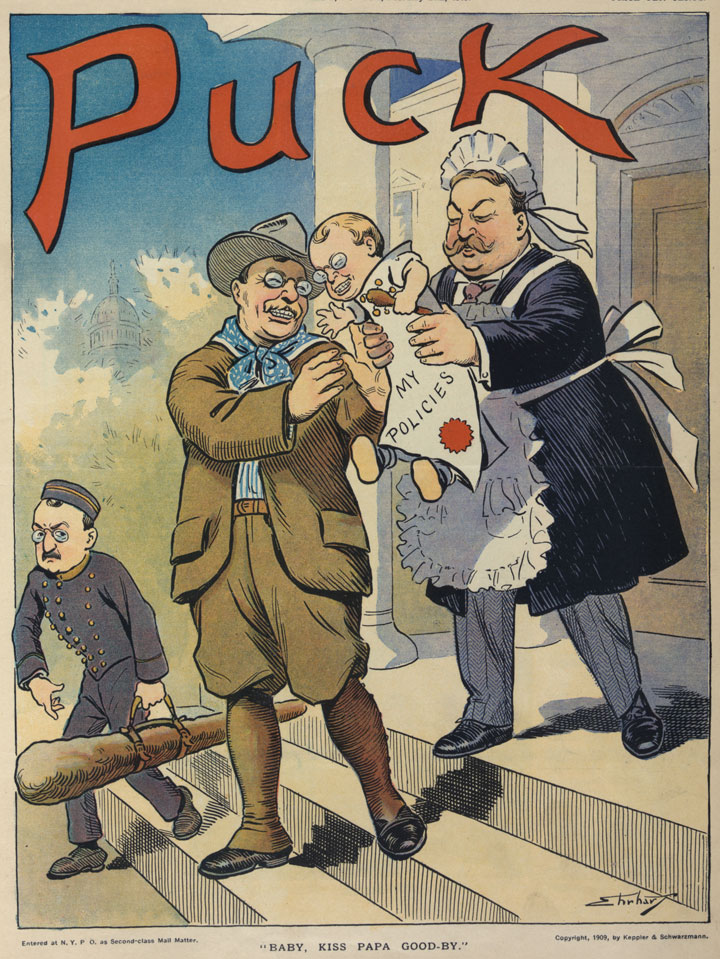An image depicting Taft as a nurse caring for Roosevelt’s policies, which are being handed by the outgoing president to his hand-picked successor. In reality, Taft was much more aggressive in antitrust legislation but did not share his predecessor’s enthusiasm for politics.
Despite these antitrust lawsuits, Taft generally sided with the conservatives of his party when it came to legislation. Only occasionally did the president side with the Progressive wing of the Republican Party, which was led by La Follete in the Senate and the long-serving Nebraska congressman George Norris in the House. Even then, Taft had little appetite for Congressional politics. For example, the president supported an effort to lower tariffs on manufactured goods—a measure that was opposed by many Northern Republicans. By the time the president’s bill made it through Congress, Senators who represented manufacturing interests had added hundreds of amendments that kept tariffs quite high in nearly every industry. Progressive Republicans urged their president to veto the bill as a matter of principle, but Taft had no stomach for power politics and went along with the conservative leadership of his party.
As the tariff bill demonstrates, many of Taft’s attempts to reform the political system ended in failure because the president refused to go against the conservative majority of his own party. A scandal involving a questionable deal arranged by the secretary of the Interior further reduced the image of the Taft administration. Secretary Richard Ballinger leased federal land in Alaska Territory to men he had once represented as an attorney in Seattle. These men sought to develop coal mines in the Alaska frontier. As head of the Forestry Service, Gifford Pinchot hoped to prevent this from occurring. When his efforts to block the deal failed, Pinchot went behind the president’s back and published a number of accusations. The public and Congress took notice, but an investigation revealed no obvious indication of wrongdoing.
It appeared to many that Pinchot had sought to generate a scandal in order to scuttle the Alaska land deal, and Taft felt he had little choice but to fire Pinchot for insubordination. This action greatly diminished the president’s record as a conservationist while the impression of scandal and disloyalty created a negative impression of the Taft administration. Although Roosevelt would be remembered as the environmental president of the early twentieth century, Taft placed more land under federal protection in his one term as president than Roosevelt. He also secured legislation that granted the president the authority to block federal land sales. However, Taft would be forever remembered as the man who fired Gifford Pinchot and permitted energy companies to exploit the Alaskan frontier. Roosevelt would also be known as the leading Progressive, despite the fact that Taft signed more Progressive reforms into law. However, most of these reforms were the result of legislation that had reached Congress after years of grassroots campaigns led by local Progressives. Taft supported but did not initiate these Progressive reforms.
Having agreed to a tentative peace agreement in the Philippines in 1902, the military government that had ruled the island transitioned into one that promised eventual Filipino independence and limited self-government. The Filipinos and the residents of Guam, Puerto Rico, and the American Samoa pressed for greater independence. They also challenged the idea that the people who lived in what became US territories should not be granted the rights of US citizens. In a series of important court decisions known together as the Insular CasesRefers to a number of US Supreme Court cases that were decided in 1901 and dealt with the rights of inhabitants of the islands the United States controlled after the Spanish-American War. The Supreme Court declared that the Constitution did not apply to territories, nor did its protections extend to the residents of the colonies., federal judges disagreed with their perspective. The Court ruled that the Constitution did not “follow the flag.” In other words, the Constitution did not automatically apply to territories, and its protections did not extend to colonized peoples.
As the leading defender of the growing US empire, Senator Albert Beveridge of Indiana supported the Court’s decision. The Constitution “applies only to people capable of self-government,” Beveridge explained. Beveridge candidly pointed out that nonwhites in the United States were explicitly or implicitly denied the right of citizenship and self-government and asked why Filipinos and Puerto Ricans should be an exception. African Americans in the South faced disfranchisement and segregation, he reminded his audience, while Native Americans living on reservations and most Asian immigrants were explicitly denied citizenship and the right to vote. If the Progressives were so concerned about the rights of Pacific Islanders and those in the Caribbean, Beveridge asked, why were they usually so reluctant to discuss the condition of minorities within the United States?
Beveridge might have pressed this point further had he not also supported the nativist impulse shared by many Americans. Conceptions of race and the “exotic” among white Americans facilitated the nation’s acceptance that nonwhite people in the United States and abroad were simply “different” from them. Attitudes ranging from paternalism to the most virulent forms of racism softened the mercenary aims of land speculators and imperialists by presenting native peoples as the natural losers of a Darwinian contest between civilization and savagery. Paternalists spoke of their desire to uplift the “savage” Indian and Filipino in ways that presented conquest as the first step in assimilation. Others equated native populations to jungle animals whose lives meant little in comparison with more evolved beings such as themselves. Even paternalists such as Theodore Roosevelt, who believed indigenous populations shared a certain exotic vitality, were eager to make more land available for white settlement and provide the United States with the benefits of empire.
While many supporters of the anti-imperialist movement opposed colonization on moral grounds, these liberals were outnumbered by racial conservatives who were motivated by fears of increasing the diversity of the US population. One of the leading concerns of these individuals was that the extension of citizenship rights would permit the migration of Filipinos and Puerto Ricans to the United States. South Carolina senator Ben Tillman was one of the most outspoken racial conservatives in America. He blamed the existence of a black majority on the problems the South faced. From Tillman’s perspective, his mission was to warn naive white Progressives who did not fully understand the danger posed by nonwhite migration. Nonwhite Americans countered Tillman’s message and presented a different perspective. For example, the author of a letter published in The Broad Axe, an African American newspaper published in Salt Lake City, asked why Americans “send tracts and bibles to Africa and India to Christianize the heathen” only to “then…send cannon and dynamite so that the poor native wretches may be blown into eternity if they attempt to defend their homes.” “Let us live up to our Constitution and laws and set an example for other nations which we claim are inferior to us,” the author concluded.
As this letter indicates, the first years of America’s overseas empire saw renewed efforts at missionary work. They also featured racism, intolerance, and even violence against those who opposed the presence of US forces. The majority of fatalities on both sides were due to diseases such as yellow fever. Because whites assumed African Americans were immune to the “jungle” diseases of the Philippines, a high proportion of black troops were stationed overseas and died in larger numbers and percentages than other soldiers. The army’s medical service, led by Dr. Walter Reed, eventually pioneered ways of preventing the spread of yellow fever. Within a few years, these methods and vaccines were applied to the civilian population. Numerous US-based charitable associations provided medical supplies, while some Filipino businesses profited from trade. In this way at least, there were some tangible benefits to being part of the American empire.
Figure 4.9
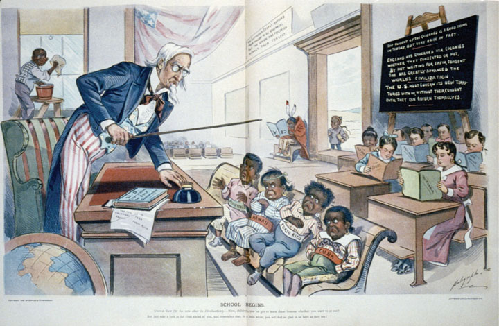This 1899 cartoon depicts Cuba, Puerto Rico, Hawaii, and the Philippines as unruly children who must be compelled to learn their lessons in civilization before they can join the rest of the class. In the corner sits a Native American “dunce” whose book is upside-down, and an African American child must clean the school’s windows rather than participate.
The acquisition of the Philippines was intended to open Asian markets to US commerce. China was a declining empire that had been defeated by the rising world power of Japan in the 1890s. However, China remained one of the largest and most important markets. Throughout world history, access to East Asian markets defined the commercial success of Middle Eastern and European empires. China’s demonstrated inability to keep foreign traders out of their nation at the turn of the century led to a full scramble among European powers to acquire “spheres of influence” by occupying Chinese ports.
Secretary of State John Hay proposed that each European nation and the United States agree to not restrict one another from trade within these spheres. However, the United States had no ability to enforce such an agreement, and the idea was largely ignored until a nationalist uprising within China sought to remove all foreign influence by force. A group known as the Fists of Righteous Harmony (called the “Boxers” in the United States and Britain) captured the foreign embassies in Beijing (then known as Peking). An international coalition made up of Japanese, Russian, British, German, and US forces soon put down the Boxer RebellionAn uprising that erupted in the summer of 1900 and was centered around Beijing. The “Boxers” feared that their society had been corrupted by the West and protested against their own government’s inability or unwillingness to keep Western traders and culture out of China. in the summer of 1900. The Boxers had risen up as part of a popular uprising against the failure of their government to keep opium traders and other foreign profiteers out of the nation. Failing to spur a revival of traditional Chinese ways and eliminate foreign influence, the defeat of the Boxers permitted the spread of trade and Western ideas throughout East Asia.
While Americans sought to maintain trade with Japan and compete with Europeans for access to Chinese markets, they expected to maintain a near-monopoly of trade in the Caribbean and Latin America. President Roosevelt offered his own interpretation of the Monroe Doctrine that would be known as the Roosevelt CorollaryExpressed by President Roosevelt in 1904, this statement of American foreign policy declared that the United States would intervene in the affairs of independent nations throughout the Western Hemisphere whenever US officials believed those nations needed assistance. As a result, the United States expected European nations with concerns in the Western Hemisphere to work through US officials.. The Monroe Doctrine had been issued in 1823 and declared that the United States would guarantee the independence of nations in the Western Hemisphere. In 1904, Roosevelt offered his interpretation of the Monroe Doctrine in which he declared that the United States must intervene in the affairs of independent nations throughout the Western Hemisphere whenever US officials believed those nations needed assistance. If one of these nations was experiencing financial instability or political turmoil, for example, Roosevelt believed that assistance from “some civilized nation” was required. Latin Americans protested that the Roosevelt Corollary was nothing more than a fabricated justification of American imperialism. The wording of the president’s decree demonstrates the delicacy of the issue, stating that the United States would intervene “however reluctantly…to exercise international police power.” In many instances, that police power was used to protect US companies or compel repayment of loans made by European and US banks.
Intervention in Latin America could also be motivated by strategic concerns. The narrow isthmus of Panama was the northernmost region of the nation of Columbia. Prior to 1903, the United States had opposed at least two attempts by Panamanians who sought to declare independence and form their own nation. In 1903, however, Roosevelt sent warships and marines to protect a group of Panamanians who sought independence. The change was motivated by America’s desire to build a canal across Panama and the reluctance of Colombian officials to approve the venture.
Politicians in Colombia sought a payment of $25 million before the United States could begin construction of the Panama Canal. In response, Roosevelt made a secret deal to offer military aid to the Panamanians. In exchange for the rights to build the canal, the United States provided military aid to help ensure that Panama’s revolution succeeded. A relatively small force of Panamanians would have likely been crushed by the Colombian army had it not been for US aid. When the revolution began, Colombia could not send troops by sea because US warships blocked the ports. A US company controlled the only railroad in the region and permitted the Colombian officers to board the northern-bound trains. US forces then arrested the officers upon their arrival in Panama, and the train did not return for the rest of the troops as promised. With this assistance, Panama secured its independence.
Colombia protested and eventually received payment of $25 million for damages suffered due to US intervention in what Colombians believed was a civil war. In addition, the United States also had to compensate Panama for the right to construct and operate the canal in its country. Finally, the United States were also forced to provide partial compensation for a French construction company that had begun work on the canal in the 1880s. In short, Roosevelt’s duplicity reduced US prestige in Latin America and cost the United States millions more than would have been necessary had he dealt honestly with Colombia. “I took Panama,” the president would later brag. His bravado proved costly in terms of lives and money, and prevented the consideration of other alternatives. For example, building a canal across Nicaragua provided a less politically volatile alternative. Although Nicaragua is much wider than Panama, construction teams could have utilized flatter land and several natural lakes to build a longer but less expensive canal.
Instead, Roosevelt secured the land rights to a ten-mile “canal zone” and began the construction of the Panama CanalA canal completed in 1914 that links the Atlantic and Pacific Oceans through a fifty-mile canal across the nation of Panama.. The same French company that had built the Suez Canal had spent $200 million and lost 10,000 to 20,000 lives to starvation and disease in a failed attempt to build the canal over a dozen years. US engineers completed the task in less than ten years, but another 5,000 construction workers perished. Once completed, the Panama Canal ranked as one of the most important feats of engineering in world history. Like the Suez Canal, which permitted ships to navigate between Europe and Asia without traveling around Africa, the Panama Canal permitted ships to avoid the journey around South America. Its completion occurred less than a month after the outbreak of World War I and permitted US warships and cargo traveling from one coast to the other to avoid the extra 8,000 mile journey and dangerous waters around Cape Horn.
President Taft believed that investing money in the Caribbean and South America would help to heal the strained relations between the United States and these nations. He called this philosophy “Dollar DiplomacyAn expression of President Taft’s foreign policy regarding Latin America that sought to replace military deployments with efforts to promote economic development. Taft hoped American investments in Latin America would promote stability and improve diplomatic relations between the United States and Latin America..” The president argued that US investment and management expertise would produce stability and prosperity throughout Latin America. However, US investors usually did little more than purchase existing businesses and plantations, which did little to promote job growth. Equally important, profits from these businesses would now flow to the United States and other foreign investors, leaving Latin America more impoverished and unstable than before.
The Roosevelt Corollary was often cited in justification of US military intervention throughout the region. For example, Taft sent the Marines to Nicaragua in response to political turmoil that threatened US investments in 1912. These troops would occupy Nicaragua almost continuously until they were removed in 1933. Similar political and financial instability threatened US business interests in Haiti, the Dominican, and Cuba between the early 1900s and the 1930s and led to additional deployments of US troops. In several cases, the potential failure of foreign investors to repay American loans convinced US officials to station troops within Latin American customs houses. In these instances, tax revenues from tariffs were redirected to American and European banks that managed the loans. From the US perspective, such measures were necessary to ensure repayment. From the perspective of Latin America, the Roosevelt Corollary was little more than a veil to mask economic imperialism. Puerto Ricans demanded independence, but they were instead granted US citizenship in 1917. This helped provide reform on this island, although Puerto Ricans and others could do little to ensure that US companies paid their fair share of local taxes or promoted businesses that aided the local economy.
Figure 4.10
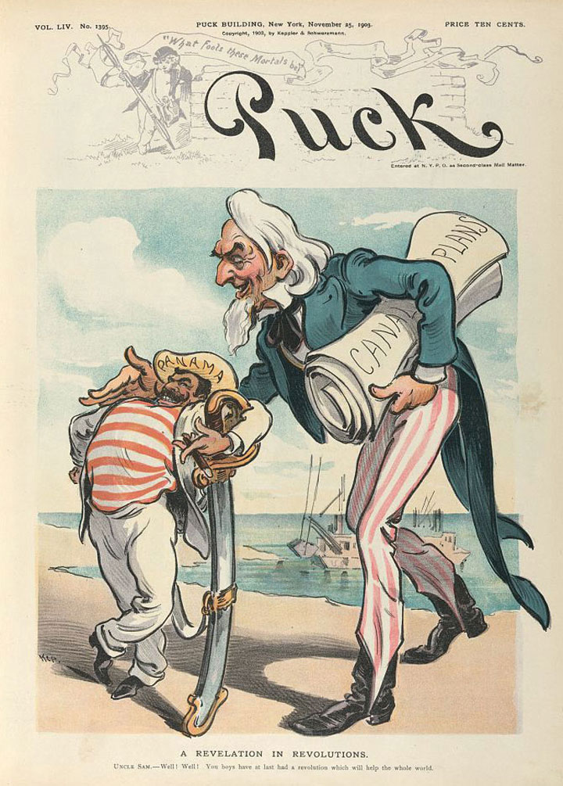This contemporary cartoon plainly indicates its belief that Roosevelt and the federal government backed the Panamanian Revolution in exchange for the right to build a canal across Panama. Most Americans at the turn of the century understood their government’s role and supported their president’s actions regarding Panama.
Roosevelt’s retirement from politics ended as soon as the former president returned from an African safari in 1909. The following year, the former president delivered a high-profile political speech in which he gave his support to a number of progressive Republican candidates in the upcoming congressional election. By the spring of 1912, Roosevelt openly criticized Taft, and few were surprised when he announced his intention to run for president once again. Still popular among many Republicans, Roosevelt’s decision to seek the Republican nomination threatened to split an already divided party.
Many wealthy Republicans viewed Teddy Roosevelt as a traitor to his class, especially after a speech in which the former president proclaimed a doctrine he called the New NationalismA political doctrine expressed by Teddy Roosevelt in 1910 that demonstrated his acceptance of Progressive ideas. New Nationalism sought the creation of a more powerful federal government that would regulate corporations and the economy in the public interest.. Roosevelt’s speech occurred during a 1910 ceremony that dedicated a statue in Osawatomie, Kansas, to the memory of John Brown. Although the former president honored John Brown, he chose to not mention Brown’s raid on a West Virginia armory or Brown’s controversial plan to liberate slaves. Instead, Roosevelt’s focused on contemporary politics, arguing that property should be regulated in the public interest. Roosevelt emphasized the importance of protecting personal property and maintaining the profit incentive of free enterprise. However, he believed that these principles should be considered within the larger context of public interest and human welfare. Roosevelt’s philosophy of New Nationalism permitted many Progressives to see Roosevelt as a supporter of their own causes, which were dependent on a strong and activist federal government. It also led conservative Republicans to forget their previous reservations about their current president and rally behind the banner of William Howard Taft.
Presidential nominations were still dominated by leading members of a particular party at this time. As a result, influential members of the Republican Party, who tended to be more conservative, enjoyed tremendous leverage over the rank-and-file membership of their party. Only a handful of states had transferred the authority to select nominees from party leaders to party members through primary elections. Roosevelt’s victory in the Ohio primary (Taft’s home state) demonstrated the likelihood that Roosevelt would fare much better in the 1912 general election. Roosevelt also won nine of the twelve other Republican state primaries. However, Roosevelt had alienated many leading members of the Republican Party, and Taft enjoyed the advantage of being the incumbent. When the Republican delegates met and held their nominating convention, party leaders quickly decided to nominate Taft before many of the delegates from states that had voted for Roosevelt were able to participate. Roosevelt’s supporters were indignant and promised to back Roosevelt if he ran as an independent. Far from ending the Progressive challenge within their ranks, the Republicans widened the divisions within their party and alienated their own members in the states that had adopted the primary system.
Although Taft would be the Republican nominee, Roosevelt decided to run as the candidate of the Progressive PartyAlso known as the “Bull Moose Party” in response to an expression by its leader, Teddy Roosevelt, the Progressive Party was a short-lived third party movement that supported Roosevelt’s presidential campaign in the 1912 election. and resume his bid for the presidency. Suggesting a more prominent role for women within the newly launched Progressive Party, Jane Addams was given the honorary position of seconding Roosevelt’s nomination. However, the Progressive Party had few early supporters beyond Roosevelt and his political allies. Even fewer believed the new organization could prevail against the two major parties. A reporter covering the convention asked Roosevelt for his thoughts on the matter. The ever-enthusiastic Roosevelt laughed off the sparse number of supporters attending the convention and claimed that he felt “as strong as a bull moose.” The nickname stuck, and the Progressives were soon known as the Bull Moose Party.
Figure 4.11
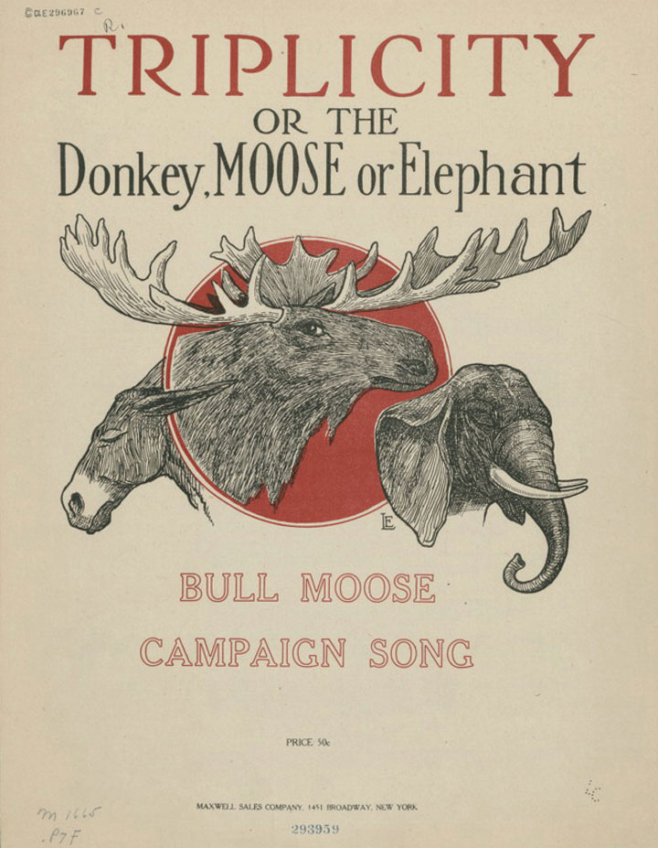The cover for Teddy Roosevelt’s 1912 campaign song. Roosevelt’s Progressives were known as the “Bull Moose Party.” Supporters utilized the “masculine” image of the bull moose (a nickname for a male moose) in contrast to the less-robust animal mascots of their rivals.
Roosevelt’s campaign featured a mixture of his doctrine of New Nationalism and Progressive ideas about how to improve government and the economy. Roosevelt endorsed women’s suffrage, an insurance system for injured workers and the unemployed, federal welfare programs for women and children, higher taxes for the wealthy, and more rigorous government regulation of corporations. As a result, Teddy Roosevelt had redefined his political orientation. As president, he had been a liberal Republican who generally sided with conservative interests. As leader of his Bull Moose Party, however, Roosevelt had moved significantly toward the political left.
Labor leader Eugene Debs also reinvented himself, running as the Socialist Party candidate for president in 1912. The journey of Eugene Debs from labor activism to Socialism occurred while he was serving a prison sentence for his support of a nationwide strike on behalf of rail workers. Debs polled 900,000 votes representing 6 percent of the popular vote. Debs and other Socialists believed that their message equating public ownership of property with democracy was gaining strength, and they were optimistic about the future of Socialism in the United States following the election. However, world events and the growing conservatism of US culture and politics meant that the election of 1912 would represent the high-water mark of the Socialist Party in US presidential politics. The existence of Deb’s campaign may have taken some votes away from Roosevelt. However, the very existence of an organized Socialist party made it harder for the opponents of the Progressives to present Roosevelt and other Progressive candidates as radicals.
The Democrats nominated a newcomer to the political scene: New Jersey governor and former history professor Woodrow WilsonA historian and college administrator who became governor of New Jersey in 1910, Wilson entered national politics and was nominated for president by the Democrats in 1912. As president, Wilson supported a number of Progressive issues demonstrating the bipartisan support for Progressive ideals at this time.. Wilson had spent most of his time in academia and had not run for any public office until winning the governorship of New Jersey in 1910. The former Princeton administrator backed many of the ideas of the Progressives and had instituted a number of popular reforms as governor, such as regulating public utilities and a workers’ compensation law. Wilson also called for breaking up trusts and restoring the competition of small and local businesses. As a result, many powerful interests within the state of New Jersey and the Democratic Party opposed Wilson and his ideas. In fact, many within Princeton had also opposed their former president because of his attempts to change the way their school had operated in the past. These conservatives would be much more supportive of Wilson after he secured the presidency. While in the White House, Wilson remained supportive of Progressive reforms at the state level, but he believed that the federal government should not interfere. While he supported strong labor laws for New Jersey, he believed that attempting to institute the same measures nationwide would violate principles of local control and risk creating an overly “meddlesome” federal government.
Most Progressives had been Republicans prior to 1912. However, Democrats in the South and certain areas of the rest of the nation increasingly supported a number of Progressive reforms. By 1912, leading Democratic politicians such as Woodrow Wilson had adopted many of the Progressives’ ideas as their own. Reflecting the division that led to the re-nomination of Taft, few prominent Republican leaders at the state or national level joined the Progressive Party. The former president’s own son-in-law even decided to support Taft because he feared that any defection from the Republican fold would destroy his budding political career. However, millions of rank-and-file members of the Republican Party supported Roosevelt, who outpolled Taft by over half a million votes.
It is only once in a generation that a people can be lifted above material things. That is why conservative government is in the saddle two-thirds of the time.
—Woodrow Wilson
The divisions between Republican supporters of Taft and Roosevelt were sometimes distasteful. Taft issued an indictment of the former president as egotistical and dangerously radical. Roosevelt responded by presenting Taft as the embodiment of political corruption. At one of the low points of the election, both sides engaged in name calling. Roosevelt won this race to the bottom by calling his former secretary of war a “fathead” whose brain was less developed than that of a guinea pig. The comment did little to enhance Roosevelt’s standing, as Taft weighed nearly 300 pounds but was regarded as a kind and honest man. It was a rare low for Roosevelt, who was also well regarded. More characteristic of the Bull Moose leader was his delivery of a rousing speech just moments after being shot in the chest by a would-be assassin. Roosevelt could not use his notes on this occasion, as they were covered in his blood, although they may have saved his life. The bullet passed through the metal case Roosevelt used to hold his trademark round glasses and was nearly stopped by the speech, which had been folded over many times and was nearly as thick as a small book.
Local political meetings were even more volatile, fueled by the whiskey that flowed during such events, regardless of Prohibition laws. Suffragists representing the votes of women argued that the low state of US politics demanded the moral influence of the fairer sex. In seven Western states, women did more than protest their exclusion from politics—they cast ballots and even won election to a number of local and state offices. Despite predictions that women would be easily misled or overly sentimental, the votes of women in these states were usually spread evenly between the candidates in ways that mirrored the overall vote in their communities. Women and men in Utah supported the conservative Taft in equal numbers, while women in more liberal areas of the West were part of the majority that cast their ballots for Roosevelt.
Progressive and Socialist candidates both spoke in favor of immediate federal legislation extending the vote regardless of gender. Democrat Woodrow Wilson was evasive on the subject, at least as a candidate in 1912. His supporters in states where women could vote tended to overstate Wilson’s support for female suffrage, while the image of the Democratic candidate was more conservative on the subject in other states. The same was true of Taft. Despite the evasiveness of the Republican and Democratic candidates, the 1912 election saw growing support for women’s suffrage. As more and more women secured their right to vote, it became politically dangerous to oppose women’s suffrage. Most politicians recognized that even in areas where women could not vote, opposition to equal suffrage would be a poor long-term strategy as the national suffrage movement gained momentum. Once the goal of a constitutional amendment extending suffrage to all women was realized, hundreds of thousands of women would be casting ballots in every congressional district. These voters would remember the men who had opposed their rights in the past.
Figure 4.12
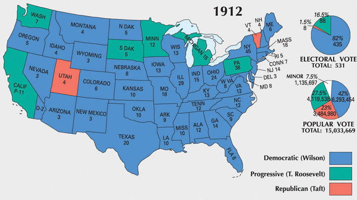This map shows the results of the 1912 election. Wilson’s use of popular Progressive campaign issues and the division of Republicans between Taft and Roosevelt helped assure a Democratic victory.
The Democrats benefitted from the defection of Roosevelt from the Republican to the Progressive Party. “Don’t interfere when your enemy is destroying himself,” Wilson exclaimed as both Taft and Roosevelt competed for Republican support. Wilson received only 42 percent of the popular vote. However, because of the unique system of American presidential elections Wilson appeared to win a landslide victory in the electoral college. Wilson won nearly every state beyond the Great Lakes region, which rallied behind the Progressives. The Democrats also took control of the Senate and added to their numbers in the House of Representatives. After the election, most people who had supported the Progressive Party returned to the Republicans. A number of Progressives were elected at the state and local level, and Progressive ideas had a tremendous influence on President Wilson. However, the Progressives as a political organization quickly faded away, much like the Populists following the election of 1896. Roosevelt remained a leading national figure, while Taft would later be appointed to the Supreme Court where he served as Chief Justice. Given Taft’s aversion to elections and politics, he found his new role in the judiciary more suitable to his tastes.